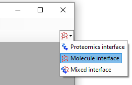
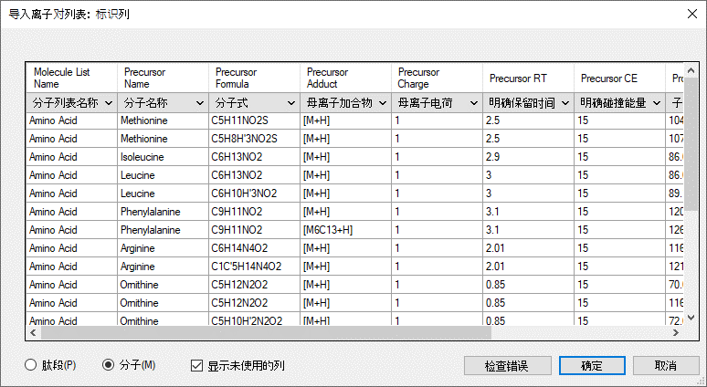
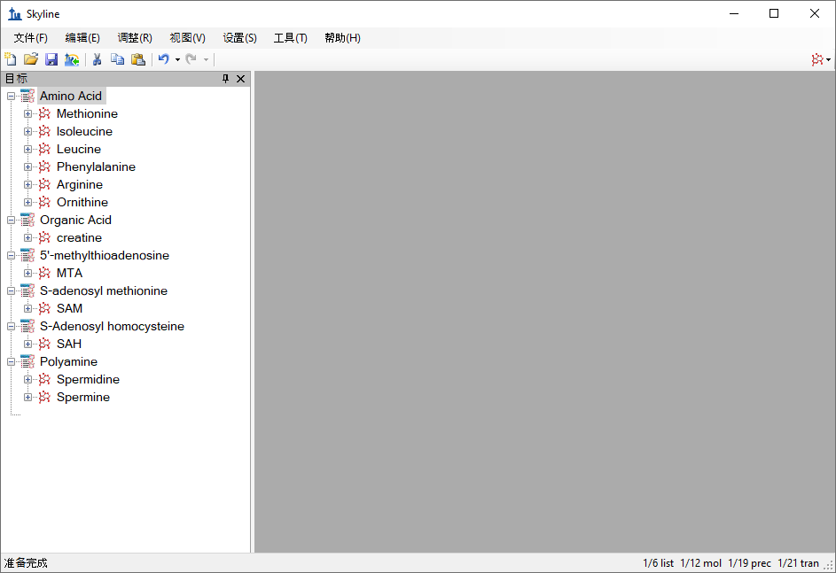
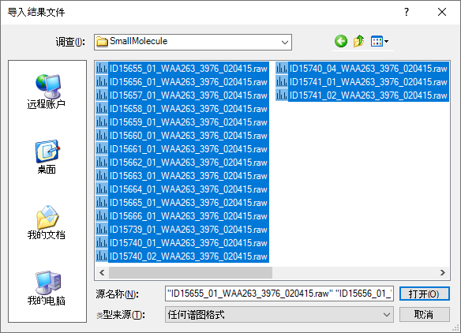
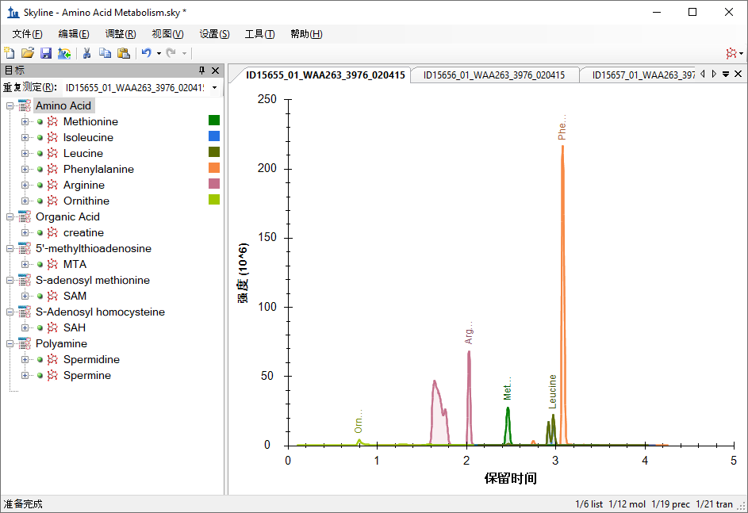
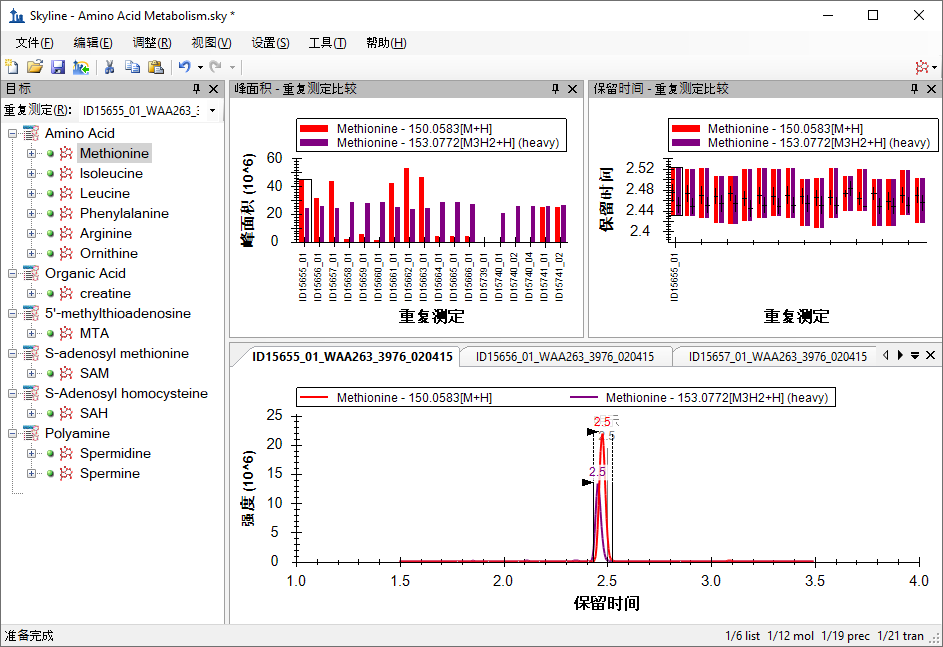

The Skyline Targeted Mass Spectrometry Environment provides informative visual displays of the raw mass spectrometer data you import into your Skyline documents. Originally developed for proteomics use, Skyline has been extended to work with generalized molecules. There are many tutorials available that will help you use Skyline for various types of analysis (SRM, PRM, MS1 Filtering, DIA, etc). This tutorial concentrates on the differences in using Skyline for targeting non-proteomic molecules.
In this tutorial, you will build an SRM assay for a group of Methionine-pathway compounds.
Skyline aims to provide a vendor-neutral platform for targeted quantitative mass spectrometry research. It can import raw data from the instrument vendors Agilent, Bruker, SCIEX, Shimadzu, Thermo-Scientific and Waters. The ability to import data across various instrument platforms greatly facilitates dissemination of reproducible methods, skill transfer across labs, cross-instrument comparisons and large multi-site studies. This remains equally true in using Skyline to target generalized molecules, as it has been for years in the field of proteomics.
To start this tutorial, download the following ZIP file:
https://skyline.ms/tutorials/SmallMolecule_3_6.zip
Extract the files in it to a folder on your computer, like:
C:\Users\bspratt\Documents
This will create a new folder:
C:\Users\bspratt\Documents\SmallMolecule
It will contain all the files necessary for this tutorial.
If you have been using Skyline prior to starting this tutorial, it is a good idea to revert Skyline to its default settings. To do so:

The document settings in this instance of Skyline have now been reset to the default.
Since this tutorial covers a small molecule topic, you can choose the molecule interface by doing the following:

Skyline is operating in molecule mode which is displayed by the molecule icon  in the upper
right-hand corner of the Skyline window. Its original proteomics menus and controls are now hidden, allowing you to focus on small molecule
analysis.
in the upper
right-hand corner of the Skyline window. Its original proteomics menus and controls are now hidden, allowing you to focus on small molecule
analysis.
The easiest way to get a molecule transition list into a Skyline document is to start with an empty document and use the Edit > Insert > Transition List menu item.
At a minimum, Skyline needs to know the charge state and either the ion formula or m/z for each precursor and product. If no product ion information is present in a transition list, it is assumed to be a list of precursor targets. Repeated precursor information with different product information is assumed to indicate multiple transitions of a single precursor, just as with peptides.
In proteomics applications, Skyline can safely assume ionization by protonation. So, all that is needed to describe a charged peptide is its sequence and charge state. For generalized molecules, however, ionization can be achieved in a variety of ways (sodium gain, hydrogen loss, etc.). Such ionization modes can be specified in Skyline using adduct descriptions of the style described at http://fiehnlab.ucdavis.edu/staff/kind/Metabolomics/MS-Adduct-Calculator/, e.g “[M+Na]”, “[M-2H]”, “[2M+ACN+H]”, etc.
Adduct descriptions can also be used to indicate that a molecule is isotopically labeled. For example, the adduct “[M3Cl374H2-Na]” indicates that the molecule has three Cl atoms replaced by 37Cl, and four H atoms replaced by deuterium, and the molecule is ionized by loss of Na.
For molecules where the formula is unknown, a mass shift can be indicated by adduct. For example, “[M(-1.23)+H]” indicates that the molecule’s mass is 1.23 AMU less than its unaltered form, and the molecule is ionized by hydrogen gain.
For molecules where the means of ionization is unknown, an adduct can indicate just a charge. For example, “[M+3]” indicates charge state three. The m/z value will be 1/3 of the molecule mass. While it is possible to describe your transition list completely in terms of m/z values for both precursors and products, without a chemical formula Skyline cannot provide isotopic distributions. So chemical formulas for both the neutral molecule and adduct descriptions are preferred.
To begin creating your first Skyline document that targets non-proteomic molecules, do the following:
You should find the following values:
| Molecule List Name | Precursor Name | Precursor Formula | Precursor Adduct | Precursor Charge | Precursor RT | Precursor CE | Product m/z | Product Charge | Label |
| Amino Acid | Methionine | C5H11NO2S | [M+H] | 1 | 2.5 | 15 | 104.07 | 1 | |
| Amino Acid | Methionine | C5H8H'3NO2S | [M+H] | 1 | 2.5 | 15 | 107.09 | 1 | heavy |
| Amino Acid | Isoleucine | C6H13NO2 | [M+H] | 1 | 2.9 | 15 | 86.096 | 1 | |
| Amino Acid | Leucine | C6H13NO2 | [M+H] | 1 | 3 | 15 | 86.096 | 1 | |
| Amino Acid | Leucine | C6H10H'3NO2 | [M+H] | 1 | 3 | 15 | 89.1 | 1 | heavy |
| Amino Acid | Phenylalanine | C9H11NO2 | [M+H] | 1 | 3.1 | 15 | 120.08 | 1 | |
| Amino Acid | Phenylalanine | C9H11NO2 | [M6C13+H] | 1 | 3.1 | 15 | 126.11 | 1 | heavy |
| Amino Acid | Arginine | C6H14N4O2 | [M+H] | 1 | 2.01 | 15 | 116.07 | 1 | |
| Amino Acid | Arginine | C1C'5H14N4O2 | [M+H] | 1 | 2.01 | 15 | 121.11 | 1 | heavy |
| Amino Acid | Ornithine | C5H12N2O2 | [M+H] | 1 | 0.85 | 15 | 70.07 | 1 | |
| Amino Acid | Ornithine | C5H12N2O2 | [M+H] | 1 | 0.85 | 15 | 116.07 | 1 | |
| Amino Acid | Ornithine | C5H10H'2N2O2 | [M+H] | 1 | 0.85 | 15 | 72.07 | 1 | heavy |
| Amino Acid | Ornithine | C5H10H'2N2O2 | [M+H] | 1 | 0.85 | 15 | 118.07 | 1 | heavy |
| Organic Acid | creatine | C4H9N3O2 | [M+H] | 1 | 1.1 | 15 | 90.06 | 1 | |
| Organic Acid | creatine | C4H6H'3N3O2 | [M+H] | 1 | 1.1 | 15 | 93.06 | 1 | heavy |
| 5'-methylthioadenosine | MTA | C11H15N5O3S | [M+H] | 1 | 3.4 | 15 | 136.1 | 1 | |
| 5'-methylthioadenosine | MTA | C11H12H'3N5O3S | [M+H] | 1 | 3.4 | 15 | 136.1 | 1 | heavy |
| S-adenosyl methionine | SAM | C15H22N6O5S | [M+H] | 1 | 2.9 | 15 | 250.11 | 1 | |
| S-Adenosyl homocysteine | SAH | C14H20N6O5S | [M+H] | 1 | 2.9 | 15 | 136.08 | 1 | |
| Polyamine | Spermidine | C7H19N3[M+H] | 1 | 3.3 | 15 | 129.15 | 1 | ||
| Polyamine | Spermine | C10H26N4 | [M+H] | 1 | 3.5 | 15 | 112.112 | 1 |
Skyline will show the Insert Transition List form which should look like this:

Skyline will show the Import Transition List: Identify Columns form:

Note that each column has a drop-down control where you can specify the type of column. In this case, Skyline successfully identifies all the necessary columns.
In this example, there are some light-heavy isotope label pairs, e.g. Methionine and d3-Methionine. In the transition list they are described as C5H11NO2S [M+H] and C5H8H'3NO2S [M+H], but using the language of adduct descriptions they could also have been described as C5H11NO2S [M+H] and C5H11NO2S [M3H2+H]. You can see an example of this in the Phenylalanine heavy-light pair: the formulas are the same but the heavy adduct description specifies that 6 carbons are replaced with C13. Note that the Adduct column is optional: as in the example of Spermidine, the adduct can be given as part of the ion formula. Note also that the Precursor Charge column is not actually needed: the charge states can be inferred from the adduct descriptions. The Label column is also not strictly needed: the heavy label can be inferred from the precursor ion formula and/or adduct.
| Note: You could also have used the File > Import >Transition List menu item to import the file directly, without the need for opening it and copying and pasting its contents. |
Your Skyline window should now look like this:

At this point, either a native instrument method, precursor isolation list (for PRM) or transition list (for SRM) can be exported. For more details on how to perform this step, please see the Targeted Method Editing, Existing and Quantitative Experiments or Targeted MS/MS (PRM) tutorial.
In this tutorial, you will simply import raw data from a Waters Xevo TQS instrument acquired using a MassLynx instrument method exported by Skyline. To do this now, perform the following steps.
The Import Results Files form should look like this:

The files are a metabolite extract of cancer cell lines under specific amino acid deprivation conditions, where cells were deprived of either the amino acid Methionine, or Arginine, or both, for a period of 3 hours versus control (all amino acids).1
Filenames and Conditions:
ID15739_01_WAA263_3976_020415 – Double Blank
ID15740_01_WAA263_3976_020415 – Extraction Blank (contains SIL standards)
ID15740_02_WAA263_3976_020415 – Extraction Blank (contains SIL standards)
ID15740_04_WAA263_3976_020415 – Extraction Blank (contains SIL standards)
ID15655_01_WAA263_3976_020415 – All AA Sample 1
ID15656_01_WAA263_3976_020415 – All AA Sample 2
ID15657_01_WAA263_3976_020415 – All AA Sample 3
ID15658_01_WAA263_3976_020415 – Minus Met Sample 1
ID15659_01_WAA263_3976_020415 – Minus Met Sample 2
ID15660_01_WAA263_3976_020415 – Minus Met Sample 3
ID15661_01_WAA263_3976_020415 – Minus Arg Sample 1
ID15662_01_WAA263_3976_020415 – Minus Arg Sample 2
ID15663_01_WAA263_3976_020415 – Minus Arg Sample 3
ID15664_01_WAA263_3976_020415 – Minus Arg, Minus Met Sample 1
ID15665_01_WAA263_3976_020415 – Minus Arg, Minus Met Sample 2
ID15666_01_WAA263_3976_020415 – Minus Arg, Minus Met Sample 3
ID15741_01_WAA263_3976_020415 – Pooled QC Sample 1
ID15741_02_WAA263_3976_020415 – Pooled QC Sample 2
The files should import within a matter of seconds, leaving your Skyline window looking like this:

To take advantage of the Skyline summary graphs for viewing individual targets, do the following:
The Skyline window should now look like this:

In this tutorial, you have learned how to create a Skyline document that targets molecules specified as precursor ion chemical formulas and adducts, and product ion m/z values. You imported a multi-replicate data set collected by a metabolomics researcher, and saw how many existing Skyline features created initially for targeted proteomics use can now be applied to non-proteomic molecule data.
1. Tang, X. et al. Comprehensive Profiling of Amino Acid Response Uncovers Unique Methionine-Deprived Response Dependent on Intact Creatine Biosynthesis. PLoS Genet 11, e1005158 (2015).